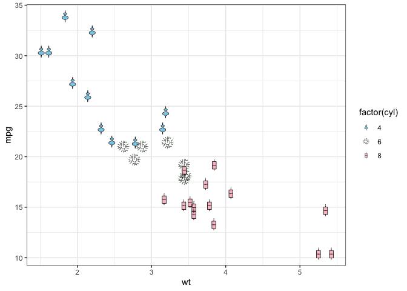

Arbitrary hand-crafted fillable shapes for ggplot2.
New shapes may be feature requested via a Github issue.
Installation
install.packages("ggfoundry")Development version
To get a bug fix, or to use a feature from the development version, you can install ggfoundry from GitHub.
# install.packages("pak")
pak::pak("cgoo4/ggfoundry")Basic example
See the get started vignette and supporting package-website articles for more details, including available shapes, a showcase of examples and how ggfoundry contrasts with alternative strategies.
ggplot(mtcars, aes(wt, mpg, fill = factor(cyl))) +
geom_casting(aes(shape = factor(cyl))) +
scale_fill_manual(values = c("skyblue", "lightgreen", "pink")) +
scale_shape_manual(values = c("violin", "dendro", "box")) +
theme_bw()